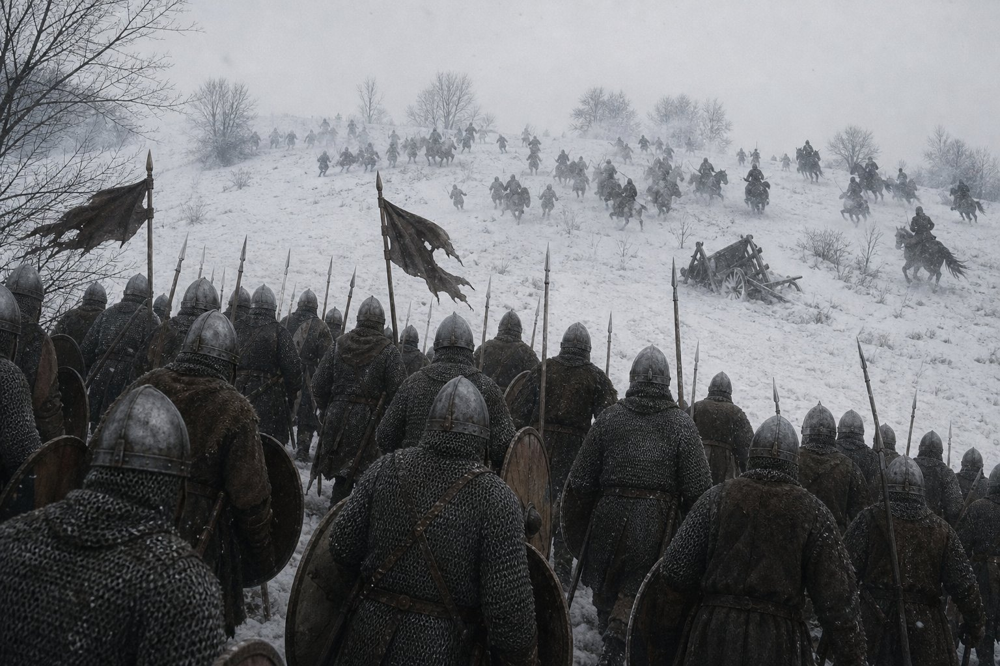
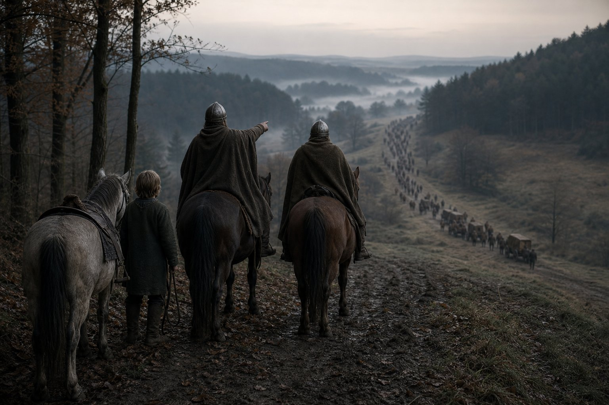
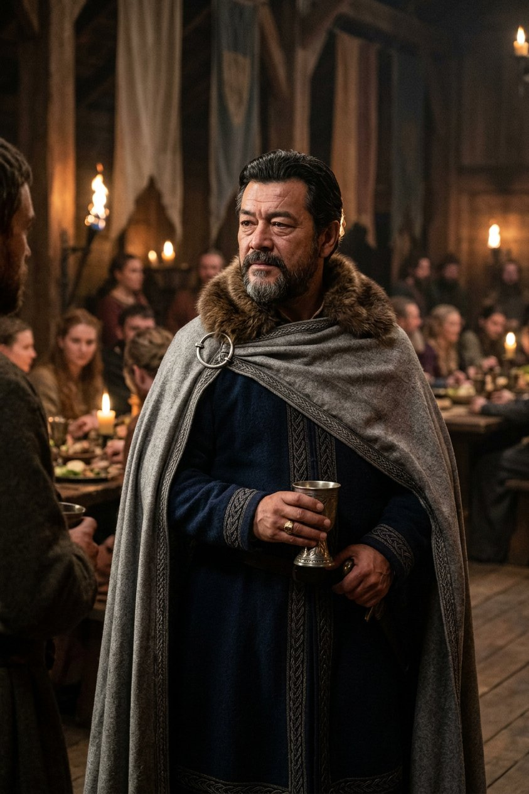
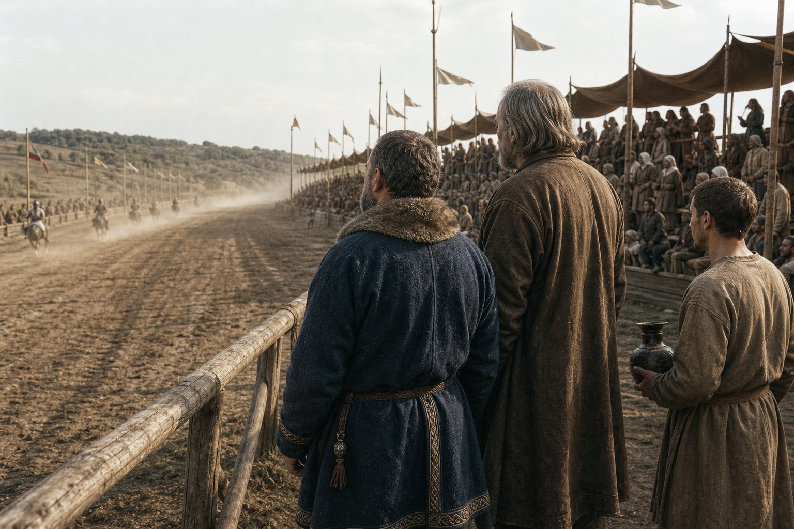
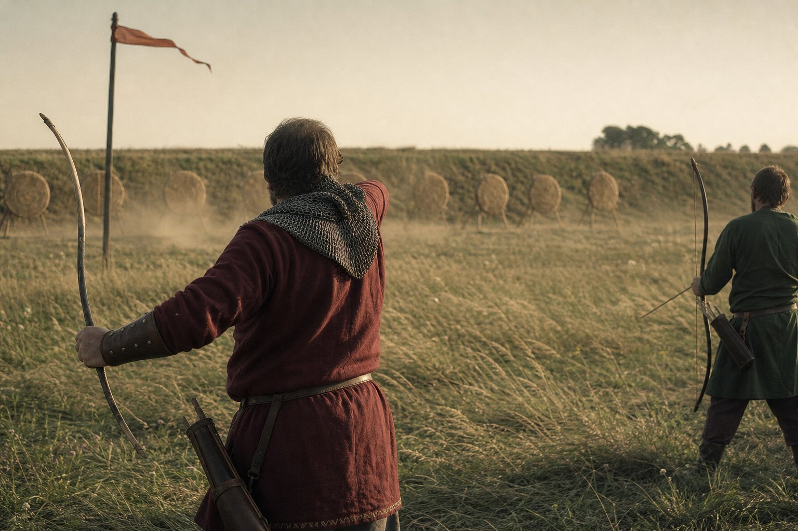
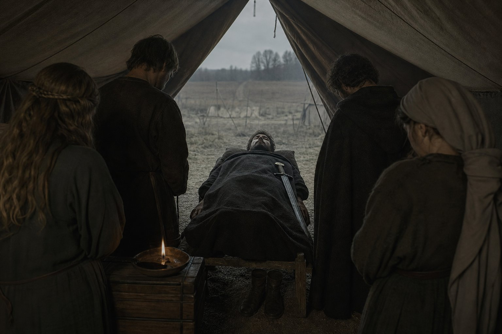
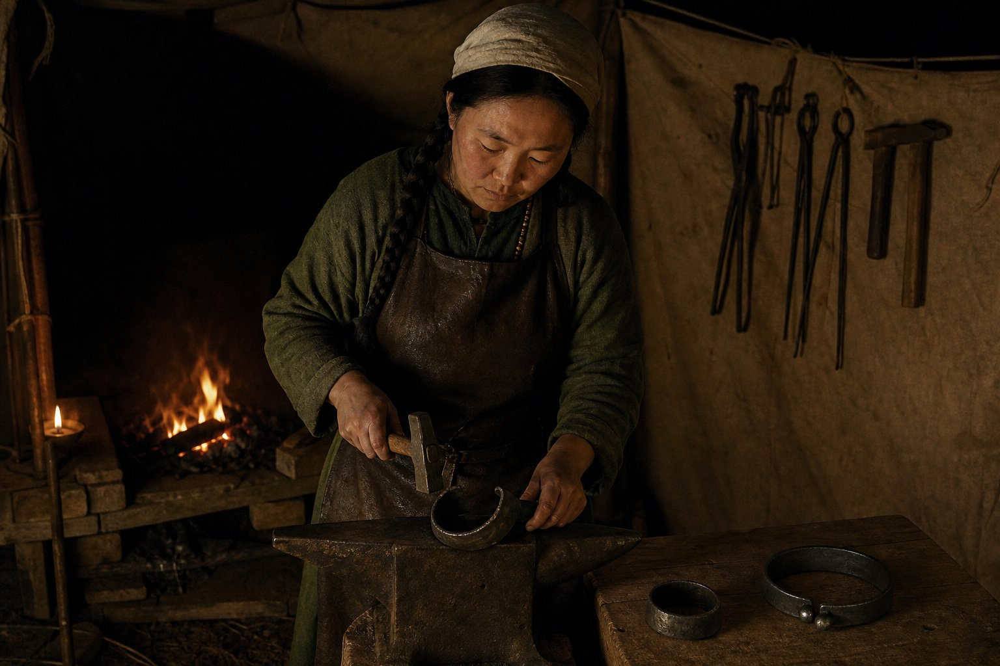
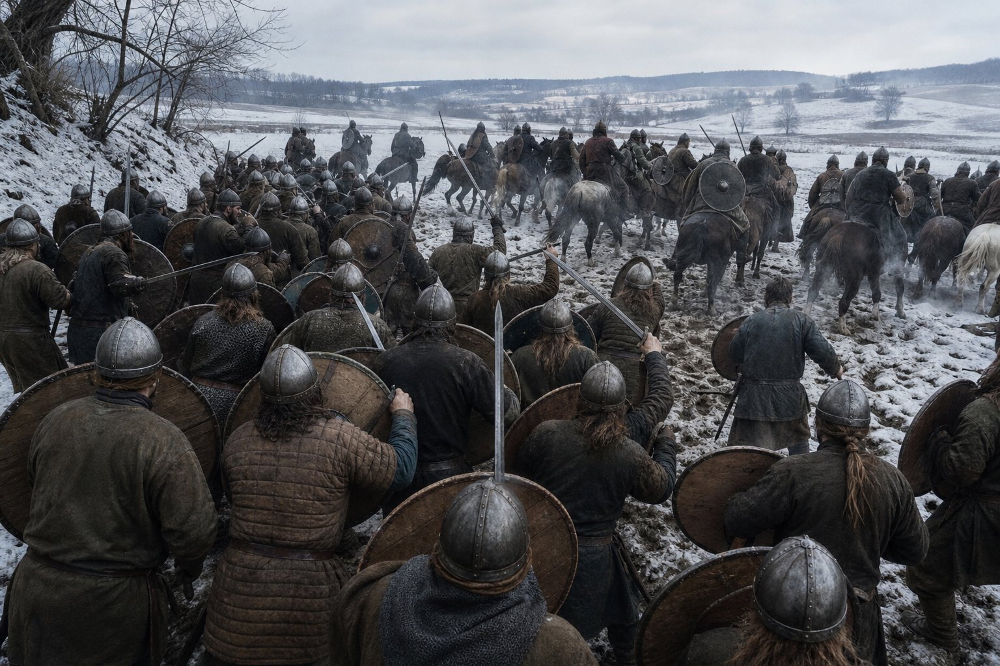
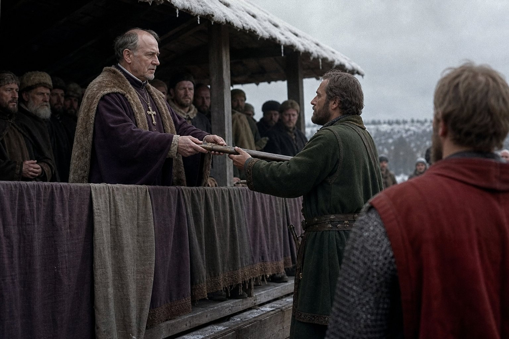
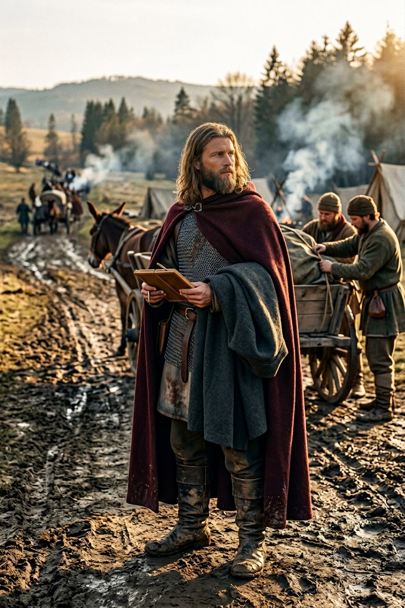

The snow at Beszterce
In the first month of 891 we fought Feodosia in the snow outside Beszterce and destroyed her army, and I have been trying to write this chapter in the order things happened and it will not go in that order, because the year 891 was the best year this company ever had and I cannot remember most of it, and there is one night in the seventh month that I remember in the wrong order and always will.
I am going to put the good part down first, because it is owed to the men who were in it, and because a book that begins with the worst thing in it has already told the reader what to think.
We had taken the defence of Beszterce for Csaba in the fifth month of 890 at a lower fee than the war was worth, and Feodosia had come at it, and we had stood in the mud through the summer and held it. A defence is a dull thing that is paid for by the month, and by the winter we were all sick of the county and its wall and its one bridge and the weather in it.
In the first month of 891 the Captain took the field and went out to find her, which is what a defender does when he has had enough of standing still, and it is the only battle in this book that this company chose the ground for and the hour of.
There were eleven hundred and seventy-eight of us. She had six hundred and sixty-six. All of hers were lost. Two of ours.
Eleven hundred and seventy-eight, which is the figure the clerk had written against our name at Ploiești two months before, and I checked it twice in the book and once against the leaves of the muster, because a clerk who prints a coincidence without checking it is a clerk who prints an error.
The snow was the thing that decided it and the snow was nobody's. Our foot went in on the left where the ground rose and the drifts were deep, and her horse could not come up the slope at the pace a horse has to come up a slope to be worth the horse, and after that it was four companies walking through a line that had been built to be attacked from the flat.
I am not going to pretend it was a battle. It was an afternoon in the snow against a woman who had hired the wrong ground, and she had six hundred and sixty-six men and we had eleven hundred and seventy-eight, and there is no cleverness in that and no shame in it either, and it took two hours.
Feodosia had been the best enemy this company ever had and I want that on the page before what comes later. She paid on the day she said. In five years she never broke a term. She had hired us against Marmaros in 885, which failed; she had come at Beszterce in 890 and been held; and in the first month of 891 she came at it again and lost her army in an afternoon and went back over the river with what was left of her household.

The county was held. It is the record's word for it and the record uses it twice, once in the eighth month of 891 and once in the year after, and I have come to like the word: nothing happens in a county that is held, and being the reason nothing happens is the whole trade of a hired company, and it is the only part of this trade that a man cannot tell a story about.
The Captain's road
In the second month of 891 the Captain became, in the record's language, a better pathfinder than he had been — a trailblazer, which is a word from the north and means a man who goes in front.
There is nothing in the record about how a man is made one. I was there and I can tell you what I saw, which is twelve years of a man walking.
He does not read maps well. That is not a thing this company says out loud, and I am going to say it because this book is supposed to be worth something. Give him a portolan and he will hold it the wrong way up and hand it back. What he reads is ground: where a wood ends and what that does to the mud below it; where a ridge will hide eleven hundred men and where it will not; how many hours of light are left when the sun is a hand above the trees.
From the winter of 891 he went ahead. Two men and a boy with the spare horses, out of the column before light, and back into it at dusk with a road, and the road was better than the one we had been going to take, every time, for two years.
The men called it the Captain's road, and there was a joke in it that wore out in about a month, and after that it was just what the road was called.
There is a thing about a company that follows one man's road that nobody tells you when you join one. The men stop looking. That is not laziness and it is not cowardice: a column of two thousand men with a route in front of it moves faster and eats less and arrives in better order than a column that argues. But twelve years of it makes a company that cannot find its own way to a ford, and I have seen that in other companies and I am not going to pretend that we are not the same.

I have thought a great deal about this since, and I will put the thought here and be done with it. He is not a man who wants to be followed. He is a man who cannot bear to be led by anybody who might be wrong, and the road is the smallest possible thing to be right about, and he is right about it every single day, and it cost him nothing and bought him everything.
Galați
The Grand Tournament at Galați was held in the first half of 891 and it was the pleasantest thing this company did in eleven years, and I say that as a man who has spent his life at tournaments being cold.
Chieftess Sophia holds Galați, and this company won her war for it in the twelfth month of 887 at a distance, by our horse, in a place none of us saw. When a client's war is won for her by men she has never met, she does not thank them; she invites them to her tournament and seats them where the county can see them, which is a better way of thanking and costs her nothing.
She is a woman of about fifty with a great deal of land and no husband and a court that is better run than most. Her tournament had four hundred horses at it and a market and three days of rain and a hall at the end of it that would hold two hundred people standing.
Two of the guests are worth writing about, and I have been putting off writing about them because they were in the same room.
The first was Duke Bajan of Vidin. He is forty-five now. He came to this company's camp in the rain in the first month of 887, hat in his hands, with a parchment and forty men and no army, and he went home in the fourth month of 889 the lord of a duchy because eleven hundred of us stood in a field for him. He is still, in the record's language and in his own, Duke Bajan. He is not a fool and he was never a coward, and he is still the worst player of the board game I have ever watched a grown man be.

He owes this company a debt of service, callable once, in men. It had been in the chest two years and four months at the Galați tournament and he had not called it and the Captain had not asked him to.
The second was High Chieftain Domoszló, whom the Bulgars and the Vlachs and the men of that country call the Brute, and who took Severin off Tarasiy in two afternoons in 882 while this company was on a pilgrimage in Rome and could do nothing about it.
Domoszló lost the war for Bereg to a captain of ours called Prijezda in the tenth month of 889, on ground none of us ever saw, and he came to Galați as a guest of Sophia's, and he did not know, when he sat down, whose company had taken his county off him.
I have been at a great many tables in this trade and I have never been at one where so much was owed in so many directions and so little was said. Bajan said nothing about the debt. Domoszló said nothing about Bereg, because he did not know. The Captain said nothing at all, which is his way at tables, and it fell to me to talk, which is not usually the arrangement and which is why I remember it.
At the end of the evening Domoszló asked him, in a friendly way, whether he had ever fought in the east, and the Captain said that he had, and Domoszló asked where, and the Captain said: Bereg.
I want the reader to understand that this was not a boast. It was the answer to the question. Domoszló put his cup down and looked at him for a while and then said that he had been at Bereg, and the Captain said that he knew, and that was the end of it, and the two of them were on good terms for the rest of the tournament, and by the end of the week Domoszló was buying the wine.

That is the thing about this trade that no chronicle will tell you. A man who takes a county off another man and then sits at his table two years later and says the name of the county is not making a point. He is answering a question, and the answer is on the record, and the record does not care how it sounds.
The archery
The archery was the last contest of the tournament and the Captain won it on the third day of the sixth month, and it is the only prize he ever took at a tournament for something his own hands did.
He had never been an archer. He is a spearman and a horseman and, since 888, a man who is trying to be a swordsman. The bow was a thing he took up at Serdosk in 885 because a company that goes to the lists enters what it can win, and he was bad at it for two years and then he was good.
His rival in the last round was Captain Konel the Noble, who had beaten this company at Ladyzyn in the ninth month of 886, which is a thing I had not forgotten and which Konel had certainly not forgotten, because he came to the butts on the first day and stood where the Captain could see him and put four arrows into the gold at eighty paces.
What the Captain did about it is the whole of this section and I have never been sure whether to admire it.
On the eighteenth day of the fifth month, when the round against Konel was called, the Captain was in his tent with a cough. On the twentieth it was called again and he had a worse cough. On the twenty-second he sent the boy with the message that his captain was abed and asked whether the round might be put to the end of the week.
By the time they shot, on the third day of the sixth month, the wind had gone round to the north-west, which is the only wind at Galați in June that comes across the butts from the left and does not cross the sun, and the Captain shot a hundred and forty-one with a following wind at his back and Konel shot a hundred and thirty-six into a cross-wind with the sun in his eye, and that was the archery.

I asked him about it afterwards, in the way I ask him about things, which is to say I asked him whether he had been ill. He said no. He said that Konel had a better eye than he had and that the wind at Galați is worth five points and that a man who does not choose the hour of a contest is a man who is content to lose it in the hour chosen for him.
He is the son of a merchant of Naniwa who counted a warehouse every winter for thirty years. Of course he thinks like that. What I could not get out of him, and have never got out of him, is whether he was ashamed. I watched him take the prize — a bow of horn and sinew, a good one, which he gave away within the year — and he was civil to Konel and Konel was civil to him and neither of them was pretending.
Bajan lost his board-game round on the second day to a boy of nineteen from the Saxon march, and took it very well, and I have never seen a duke take anything so well in my life.
The eleventh day of the seventh month
On the eleventh day of the seventh month of 891 Feodosia was a prisoner in this company's camp, and the war for Beszterce ended in the eighth month with the county held.
The record has one line for it and the line is that she was imprisoned. It does not say how she was taken and this book is not going to guess. I was with the baggage that week, on the road behind the column with the ledgers and the chest and eleven carts, and two of our companies brought her in, and by the time I saw her she had been three days in a tent with a guard on the flap and her own servants had been sent back to her household with a letter.
She was thirty-four years old. She had been the enemy of this company for six years and the best one, and she had lost her army in the snow in the first month and her war in the eighth, and she sat in a tent in a field in the Vlach country with her hands in her lap and received the Captain of the company that had beaten her.
I was at that meeting, because I keep the book and the terms of a surrender are a thing a clerk writes down. I will put down what was said and not what was meant.
He offered her her parole within the county, her household, and no ransom, and asked her for the list of her companies' dues, because a company that has been beaten and not destroyed will be hired again in two years and he wanted the arithmetic before it was stale.
She said that she would give him the list if he would give her a thing in return, and he asked what. And she said: the name of the man who writes your names down.
And he said: Chrysogonos, and pointed at me, and I have been pointed at by better men than either of them, and I have never been more frightened in a tent.
I have thought about that exchange for a very long time. She was not asking for a clerk's name out of spite. She was asking whether the company that had beaten her kept a book, and whether the book could be read, and whether a woman who had lost everything to it could find out how.
The twenty-seventh day
On the twenty-seventh day of the seventh month of 891 Hippostrate was murdered in the camp at Beszterce, and on the same day Ana was put in irons.
Hippostrate was thirty-four. He was one of the five Greeks who came into this company at Constantinople in the ninth month of 879 — Evanthia, Eupraxia, Hippostrate, Ioanna, and me — and he was the youngest of us, and he was the only one of the five who had never been anything but cheerful about it.
I have written three sentences and I have been sitting here for a while. This is the page I have been putting off through eleven chapters and I am going to write it as plainly as I can and then leave it alone.
He joined at twenty-two with a borrowed sword and a bad poem about the walls of Theodosius, and he was in every battle this company fought from Thessaloniki in 880 to Beszterce in the first month of 891, and he was never wounded and never sick and never in a quarrel that I know of, and he was killed in a camp in the seventh month between the evening meal and the changing of the guard, and nobody saw it happen, and the record does not say who did it.

That is the whole of the fact. Everything else in this section is mine and I have marked it, and the reader may have it or leave it.
He was buried the next morning in the same way as Shivamara and the same as eleven others I have stood at the side of, with his sword in the grave because he had no horse and his boots because he had no use for them, and the four of us who came out of Constantinople together stood at the edge of it and Evanthia said the words in Greek and Eupraxia cried and Ioanna looked at the trees.
Ana was in irons before the grave was filled.
Everything on this page is now the captain's, and I will not write what I did not see. In the morning of the twenty-seventh she was a companion of this company of nine years' standing, who had come to us at Debrc in the twelfth month of 881 and had been his friend since the twenty-first day of the eleventh month before that. In the evening she was in irons in a tent with a guard on the flap, and the guard was changed twice a day, and the irons were new.
The record does not say that she killed him. I want that sentence to stand by itself, because I have read a great many accounts of this business since, written by men who were not there, and every one of them has decided.
What the record says is that on the twenty-seventh day of the seventh month of 891 Hippostrate was murdered and Ana was imprisoned, and that is what this book says.
What I can add is what the camp was like, because the camp is a fact and the camp is what I have. Four hundred men who had been eating at the same fires for ten years stopped talking when she was carried past. The officers' table sat for an hour that evening and said nothing to each other and everything to everybody else. Two men asked to be moved to other companies and were moved. Yehudis, who is a physician and has seen more of the inside of this company than any of us, said one thing to me that night, which was that in her country a thing like this is settled in a week and in this company it would be settled in twenty years, and that she had decided which was worse and was not going to say.

Matako's page
He has asked me to write this page because I am the one who made them, and I have been three days deciding whether to write it and I am writing it because Chrysogonos will not, and a chapter that leaves out the forge is a chapter written by clerks for clerks.
I made an iron cuff and a collar and a chain in the winter of 881 for Dehanagadevi, who had killed a man of this company. I took them off her in the eleventh month of 886 with the same tongs and the same fire. On the night of the twenty-seventh day of the seventh month of 891 he came to the forge and stood by the anvil and said: a pair, and a collar, and no chain.
I said: whose? He said: Ana's. I said: the same as before? And he said: no. Lighter. She is not to be dragged.
That is the whole conversation and it is the whole of what I know about it, and I have written it down because in twenty years there will be men in this company who will say he ordered a heavy pair, or a chain, or that he had them made before the murder, and none of that is true. There was no chain. The cuffs were lighter than Dehanagadevi's by a third and I know because I weighed them out of my own stock.
I have made eleven hundred horseshoes and four hundred spears and one sword that was worth anything and two sets of irons, and I want it understood that an iron is made to a wrist. You do not make it to a crime. You measure the wrist and you take the iron out of the fire and you close it on the horn of the anvil and you strike it home, and if you are good at it the man in front of you does not lose his hand to it, and that is the entire moral content of my trade.
He stood there while I made them. He did not look at me and he did not look at the work and he stood about four paces off with his hands behind his back for two hours, and when I was done he said thank you and went out, and I did not see him again until the funeral.
I liked her. That is the thing I want on this page and not on his. Ana taught me to swear in Vlach in the winter of 882 and she laughed at my Latin and she mended a coat of mine that I still have, and I have put irons on her wrists and I would do it again if he asked me, and both of those things are true at once and no book is going to make them into one thing.
What the company did with it
The irons stayed on through the autumn and the winter and into the following year, and Ana stayed in the company's custody, and the record never says another word about her, and neither will I beyond what I saw.
There is a thing about a company of this kind that nobody outside it understands. It is not an army and it is not a household and it has no law but the one its captain carries in his head. That is a strength in a field and it is a horror in a camp, and every man in this trade knows it, and none of us has ever come up with a better way.
It had not always been like this. In the ninth month of 879 Dehanagadevi killed a man of this company and the Captain put her in irons, and in that business there was a dead man and a woman with a knife and eleven men who had seen it, and the whole thing was settled in an hour because there was nothing in it to settle. In the seventh month of 891 there was a dead man and no witnesses at all, and the Captain did the only thing a captain can do with a murder in a camp and no witnesses, which is to take the one person he can reach and put her where the company can see that somebody has been put somewhere.
I do not know whether that is just. I know that it is what an army does, and I know that this company is an army now and was not one in 879, and I have never been able to work out whether the two facts are the same fact.
Dehanagadevi went to the tent. She had worn irons for seven years and had them struck off in 886 and had been keeping the stores of this company since before the Bulgar war, and she went to the tent on the second night with a blanket of her own and stayed an hour, and no one has ever told me what was said and I have never asked her, and I have decided that the one thing this chapter will not do is invent that conversation.
The Captain did not go. That is a fact and I make nothing of it, which is more than most of the men who talk about this business do.
He said one thing to me in the whole of that autumn, in the tenth month, on the road, and it was not about any of it. He said: Chrysogonos, how many of this company have I put in irons in twelve years? And I said: two. And he said: and how many have I buried? And I said that I would have to look at the book, and he said: so would I.
Wiesbaden
The Grand Tournament at Wiesbaden ran from the ninth month of 891 into the first month of 892, in the far west of the German country, under Prince-Archbishop Liutbert of Mainz, who is a prince of the church with an army and a tournament and a mint, and in that country those three things are the same thing.
We went because we had gone to Lippe two years before and because a company that stops going to the lists stops being known, and because the Captain had not been in a field since the snow in the first month.
On the first day of the twelfth month he sprang an ambush in the melee, which is the kind of thing that is a great deal harder than it sounds, because a melee is a field with two hundred men in it on both sides and no line and no orders, and the man who wins it is the man who arranges for a hundred of his own men to arrive somewhere at a time when the other side is not expecting a hundred men.
He put sixty men behind a fold in the ground on the left of the course where the Saxon companies were used to coming through, and he held them there for the best part of an hour in the cold, and when the Saxon wing went past he brought them out on the flank and the thing was over in twenty minutes.

The melee was won on the seventeenth day of the twelfth month by the company of Duke Centule, which the Captain's sixty men were part of, and on the twenty-fifth day Liutbert awarded the prize sword to Centule, who was the captain of the winning team and who had spent the whole of that afternoon in the middle of the field being brave and visible, which is what a duke is for.

The Captain was not given anything. He was thanked by Centule in front of the stand and the stand applauded, and I watched his face while it happened, and there was nothing in it at all.
I have set that afternoon next to the other one in this chapter on purpose, because a reader who has come this far is entitled to the comparison. In the seventh month a man was murdered in his camp and a woman was put in irons and he did not explain either of them, to the company or to me. In the twelfth month he took sixty men behind a fold in the ground and won another man's prize and came away with nothing, and the whole of the western country thought him a fine soldier.
Both of those things are the same man and the same year and I have no theory that puts them together.
The winter at Wiesbaden was the coldest this company had spent since the northern years, and the men made a fire in the middle of the camp the size of a threshing floor and kept it up for eleven days, and there is a thing that happens to a company in a hard winter that is worth one paragraph in a book of this length: it gets quieter, and then it gets kind. Men who had not spoken to each other since the seventh month were sharing a fire by the first. That is not forgiveness and nobody thought it was; it is what cold does.
Nannuka
On the eleventh day of the first month of 892 Nannuka of Narwar died of a seizure, in India, in his own hall, at a distance from this camp that I cannot put a number on without being wrong.
Nannuka is the lord who took this company in when it was four years old and had nothing, in the year 874, and gave it a war and a wage and a roof, and who is the reason there is a book to write. Chapter IV of this history is his and everybody who reads it knows it.
News of a death does not travel west from that country in a straight line. It came to us in the third month of 892, in the Rhineland, by a merchant of the Radhanite road who had it from a man in Baghdad who had it from a man in Multan, and it was four months old and it was three times translated, and any of the three men in the chain may have got the name wrong.
I want the reader to sit with that for a moment, because it is the truth about every piece of news in this book before about the year 890. Everything this company knows about the east it knows at fourth hand and late.
The Captain heard it in the market at Wiesbaden, standing at a stall, and he asked the merchant three questions: how old was the man, how did he die, and who holds Narwar now. The merchant knew the first two. Nobody in that market knew the third, and I do not know it to this day.
Then he walked back to the camp and had the roll called that evening, all of it, in the ordinary way, and when the clerk came to the year 874 he stopped him and read the names of that year out himself, all eleven of them, and there are four of those eleven alive now, and he read all of them anyway.
Nannuka is in this book as a man who gave a company of forty men with no roof a wall and a war in the year 874, and who asked nothing of them afterwards that any of us could pay, and who was, as far as I know, the first lord in this history to hire Edouinos Silviades for anything except killing. He was a prince of a small country in the middle of a large one. He was kind to a boy of twenty-four who had a wrecked ship and eleven men behind him, and that is the whole of the transaction, and a book that has spent eleven chapters counting fees ought to say out loud that the largest debt in it has no number on it.
He did not say anything about Nannuka to the company. There was no fire and no speech and no drinking of anybody's health. He read the names of the men who had been with him in India when he was twenty-four, and then he went to his tent, and the next morning there was a tournament.
Two wars that failed
The Bulgar revolt failed in the ninth month of 891 and the Wallachian revolt failed in the fourth month of 892, and both kings kept their crowns.
These were the two wars of this company's that were fought by other men. Gavril's revolt against King Vladimir-Rasate had been lost at Shumen in the second month of 890 when the King destroyed Tepes, and at Brăila in the third when he beat Gavril, and in the seventh we had destroyed the King's army in the field and killed eighteen hundred and eighteen of his men and gone over the crest after him and not caught him, and fifteen months later the revolt was over and the King was in his hall.
Kulin's revolt against King Simeon of Wallachia was the same and worse, because we had beaten the King in an even field at Ploiești where the numbers were within twenty-six of each other, which is the best thing this company has ever done with a spear, and in the fourth month of 892 it was over and Simeon was on his throne and Kulin was not.
Two kings beaten in the field in one year. Two revolts lost. Two kings still kings.
I put the question to the Captain in the second month of 892, when the Bulgar news came, and I put it as flatly as I have ever put anything to him, because I had been carrying it since Brăila. I said: what did we buy with eighteen hundred men and two years?
And he said: we bought the thing that was for sale.
And I said: which was?
And he said: the knowledge that a king can be beaten by a company and still be a king. And then he said the sentence I have been writing this whole book toward, and I am going to put it down exactly, because I wrote it on a wax tablet within the hour and I still have the tablet. He said: Chrysogonos, a battle is a thing a company wins. A war is a thing that gets signed. Nobody in this company signs anything.
A battle is a thing a company wins. A war is a thing that gets signed. I have been a soldier for twenty-six years and I have never heard the whole of my trade put into three sentences before or since.

Two men came into this company in the first half of 892, in the middle of all of that: Iacob, who is a Wallachian of about twenty-five and who came in with a good horse and no letters of any kind, and Dubravka, who is a Serbian woman of thirty who was a widow with a cart and a mule and a quarrel with a brother, and who rode into the camp and asked for the clerk, which is how I met her.
I put her on the roll under the date and she asked me whether the company's book was kept in one hand or several, and I said several, and she said that she had heard that, and that it was a mistake, and that a company this size should have one book and one hand and two copies of it.
I have thought about that a great deal since. She was right.
The count
Here is the record's count of this company, and I print it with a warning on it, which is that the record does not put a month against it and neither will I.
Fifty-one companions. Thirty regiments. Two thousand three hundred and forty-six men present of two thousand four hundred, which is the fullest this army has ever been. Two thousand six hundred and twenty-two gold. Twenty-nine thousand one hundred and fifty-six piety, which is nearly a third again what the company held at Vidin.
Every number in that return is better than the last one, and the last one was the best count this book had ever printed, and there is a thing about it that I want the reader to see. Not one of those numbers is land. A man can count horses and men and money and the years of his own praying, and there is no line in any return in this book for a county, because a county is not a thing a company can hold, and every year we get better at the things that are not a county.
The war for Beszterce was won. The two wars that we had taken up for kings and their rebels were lost. Ana was in irons in a tent and Hippostrate was in the ground outside Beszterce and Feodosia was in a tent of her own with a guard on the flap, and the company was fifty-one strong and fuller than it had ever been.
He asked me a question in the fourth month of 892, on the road, in the evening, when the carts were being seen to and there was nothing to do. He asked me whether I knew of a school — he used that word, a school — where a man might learn the law of a country, not the custom of it, and not the way a lord's steward settles a thing at his gate, but the written law, of the Romans, in the language it was written in.
I said that there was such a place and that it was in Rome and that it was full of monks and the sons of lawyers, and that it cost money and took years and that a man of forty-two with an army would be a joke in it.
And he said: I am forty-two. I can be a joke for a year.
That is the end of this chapter, and it is not the end of the year, and the record has eleven months more of 892 in it that this book will get to in its own time. A man who has beaten two kings, and lost two wars, and put his friend in irons and never once explained why, asked a clerk on a road in the fourth month of 892 where the law was written down.